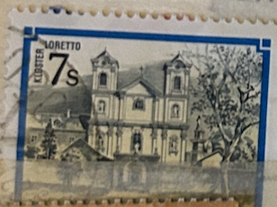
| SOURCE | TITLE| IMAGE MATCH | click to source page |
| eBay | Austria - 1987 - 7Sh - Monasteries of Austria - Loretto Monastery - #17795 | eBay | 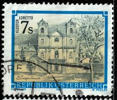 |
| eBay UK | Austria 1984 Loretto Monastery 7s Fine Used SG 2002 VGC | eBay UK | 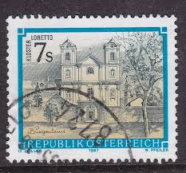 |
| HipStamp | Austria 1362 used SCV $ 0.25 (DT) | Europe - Austria, General Issue Stamp / HipStamp | 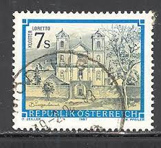 |
| Flickr | wonderful austrian stamp Austria 7.00 Österreich postage 7… | Flickr | 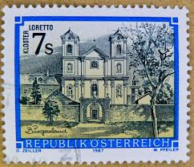 |
| iStock | Jordan Postage Stamps Stock Photo - Download Image Now - Above, Antique, Arab Culture - iStock | 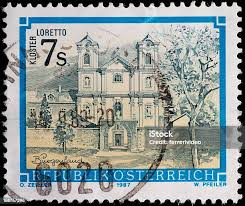 |
| esam.ir | تمبر اتریش - سری پستی - ساختمان - کاخ - 1987 | 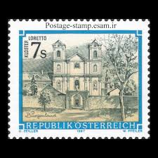 |
| Alamy | Austria 1987 hi-res stock photography and images - Alamy | 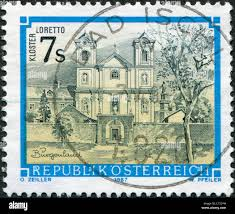 |
| Alamy | Lobetto hi-res stock photography and images - Alamy | 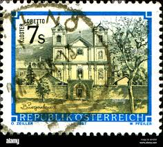 |
| Todocolección | austria. sello del año 1908, valor 10 paras, en - Buy Antique stamps of Austria on todocoleccion | 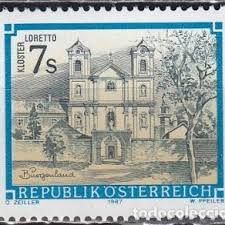 |
| Dreamstime.com | Austrian Stamp Used for Provincial Customs, Tyrol, Pustertal Editorial Image - Image of country, feminine: 220743385 | 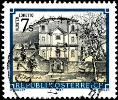 |
| iStock | Foto de Selos Áustria Bad Tatzmannsdorf Burgenland Da Série Sights In Austria Ilustração Stock Photo e mais fotos de stock de Antigo - iStock | 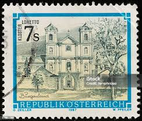 |
| willhaben.at | Briefmarken - Briefmarken | willhaben | 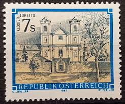 |
| Aukro | Rakusko 1958 Mi 1048 ine raz. | Aukro | 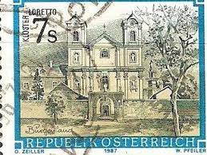 |
| iStock | Austrian Building Postage Stamp Stock Photo - Download Image Now - Austria, Austrian Culture, Building Exterior - iStock | 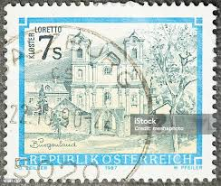 |
| Shutterstock | Micro Villi: Over 105 Royalty-Free Licensable Stock Photos | Shutterstock | 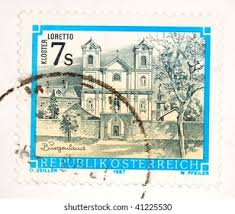 |
| Todocolección | austria // yvert 235 tasa // 1950-57 ... usado - Buy Antique stamps of Austria on todocoleccion | 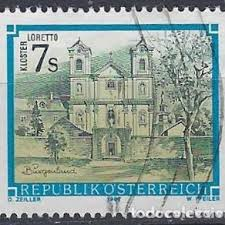 |
| eBay | Blue Full Sheet Latin American Stamps for sale | eBay | 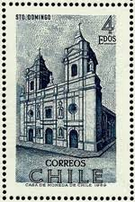 |
| zeboose.com | Malta 1965 (Variety) 6d French Occupation missing silver – ZEBOOSE.COM | 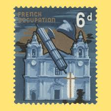 |
| postoveznamky.sk | Issued and prepared postage stamp - www.postoveznamky.sk | 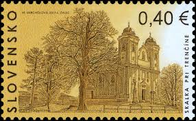 |
| Osta | Tsiili " KLOOSTER " 1970 MNH (247073634) - Osta.ee | 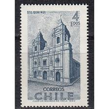 |
| David Rumsey Map Collection | Browse All : Geography Book by Vandermaelen, Philippe, 1795-1869 and Imp. Simonau & Toovey - David Rumsey Historical Map Collection | 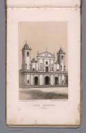 |
| Alamy | Postage stamp malta hi-res stock photography and images - Alamy | 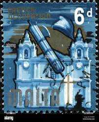 |
| Wikipedia | Veselí nad Moravou - Wikipedia | 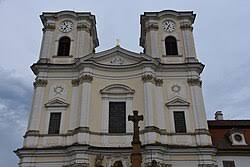 |
| stampphenom.com | Guatemala 1967 Church of the Convent – StampPhenom | 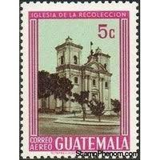 |
| Wikipedia | Cathedral of the Holy Name of Saint Virgin Mary - Wikipedia | 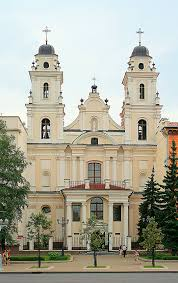 |
| Wikipedia | Church of St. Theresa, Vilnius - Wikipedia | 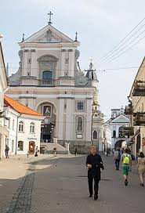 |
| eBay | Vatican 2001 Guiseppe Toniolo Institute for Higher Studies SC 1196 FDC | eBay | 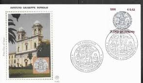 |
| Discogs | Schubert – Kirche Lichtental, Messe in G-Dur, D 167 – Vinyl (LP), 1978 [r23263373] | Discogs | 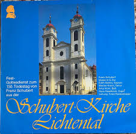 |
| Guide to Europe | Baltic Adventure | Guide to Europe | 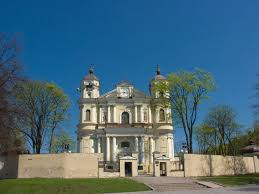 |
| eBay | PC POLAND CHELM KOSCIOL KATOLICKI (a70501) | eBay | 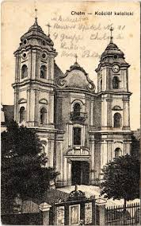 |
| Wikipedia | Holy Cross Church, Warsaw - Wikipedia | 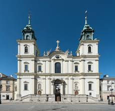 |
| Wikipedia | File:Kościół św. Ducha Warszawa.jpg - Wikipedia | 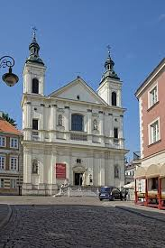 |
| Wikidata | Saint John of Nepomuk church - Wikidata | 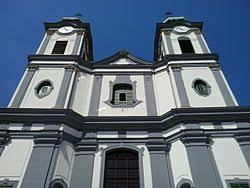 |
| Where was I in September 2022? : r/whereintheworld | 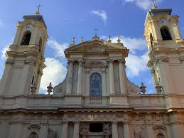 | |
| Dreamstime.com | 1977 Malta 7c "Europa" Used Stamp Editorial Photography - Image of brand, textile: 414174462 | 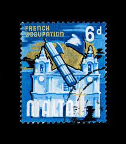 |
| Wikipedia | Cathedral of the Resurrection of Christ, Ivano-Frankivsk - Wikipedia | 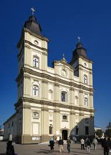 |
| Wikidata | Veszprémvarsány - Wikidata | 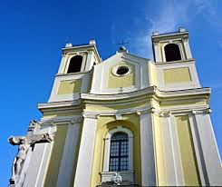 |
| Alamy | Postage stamp from Chile depicting Santo Domingo Church, Santiago (issued for exploration and settlement by Spanish explorers Stock Photo - Alamy | 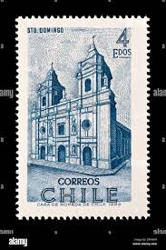 |
| eBay | Chile Stamp- Scott # 389-4e-Mint/NH-OG-1970 | eBay | 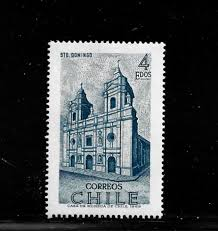 |
| Alamy | Roman catholic church (1762), Bogorodchany, Ivano-Frankivsk Oblast (province), Ukraine Stock Photo - Alamy | 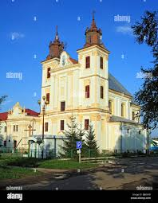 |
| alamy.it | Chiesa cattolica romana (1762), Bogorodchany, Ivano Frankivsk Oblast (provincia), Ucraina Foto stock - Alamy | 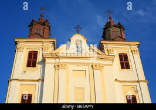 |
| Maria Gabriela Lacerda, who was crowned Miss Universe Brazil 2025, pays a heartfelt tribute to Brazil's patron saint, Our Lady of Aparecida. The moment highlights her deep respect for the country's spiritual | 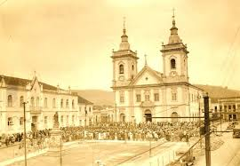 | |
| one.bid | POSTCARD CHEŁM CHOLM CATHOLIC CHURCH PRE-WAR - Online auction / Online bidding - Price - OneBid | 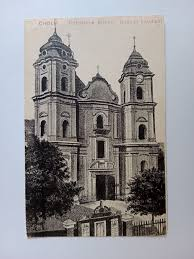 |
| Wikipedia | Костёл Пресвятой Девы Марии (Тракай) — Википедия | 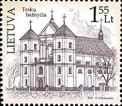 |
| Structurae - International Database and Gallery of Structures | Cathedral of the Resurrection of Christ (Ivano-Frankivsk, 1761) | Structurae | 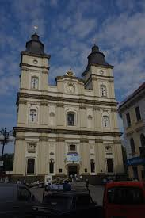 |
| eBay | CHILE, SANTO DOMINGO, INTAGLIO OVER THICK PAPER, ONLY 100 PRINTED, PRISTINE | eBay | 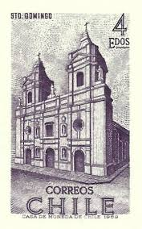 |
| Shutterstock | 85+ Thousand Church Holy Apostles Peter Paul Krakow Royalty-Free Images, Stock Photos & Pictures | Shutterstock | 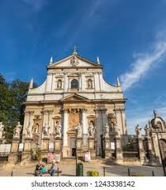 |
| iStock | Ploiesti Romania Stock Photo - Download Image Now - Architecture, Church, City - iStock | 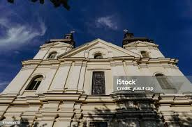 |
| Dreamstime.com | Facade of Pauline Order Church of Holy Spirit - Kosciol Sw. Ducha - at Freta Street in Historic New Town Quarter of Warsaw, Poland Editorial Photo - Image of outdoor, historic: 185047261 | 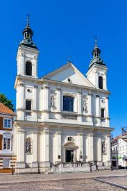 |
| Shutterstock | Color Sketch Noto Cathedral Sicily Italy Stock Illustration 1930078085 | Shutterstock | |
| Getty Images UK | Metropolitan Cathedral High-Res Stock Photo - Getty Images | |
| Churches of Rome | 376-Santa Maria delle Grazie | |
| Wikimapia | Cathedral of the Holy Resurrection - Ivano-Frankivsk | |
| Yelp | The Best 10 Architects near H.T. Projekt in Horšovský Týn - Yelp | |
| Photos by Elizabete Alexandre (@elizabetealexandreferreira) · January 24, 2026 | ||
| Getty Images | Historic Baroque Church With Twin Towers Under A Clear Sky Basilica Of The Nativity Of The Virgin Mary Chełm Chelm Cholm Lublin Voivodeship Poland Europe High-Res Stock Photo - Getty Images | |
| Shutterstock | 9,333 Monastery St Michael Royalty-Free Images, Stock Photos & Pictures | Shutterstock | |
| Photos by Илья Остриогло 💣 Forever young (@ostrioglo.ilya) · August 9, 2025 | ||
| TikTok | Esses são alguns dos meus últimos trabalhos? Como uma pessoa que ama a... | TikTok | |
| Donauschwaben Villages Helping Hands | Knees in Banat | The Man From Knees - Martin Roos |
{kind=link}